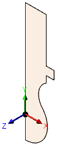
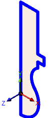

'''Contour de l'esquisse'''
Profil sélectionné
Sélectionnez un profil 2D issu d'un fichier de CAO importé ou d'une esquisse. Ce profil doit être tracé de manière à correspondre à la moitié de l'outil et à une présentation 2D plate. Les lignes de construction ne sont pas autorisées et la limite doit être un profil fermé.
 |
 |
|
'''Contour de l'esquisse''' |
|
Profil sélectionné |
Remarque: vous risquez de rencontrer un problème de chaînage si les limites ne sont pas fermées ou si des entités se chevauchent. Ajustez ou étendez les intersections pour fermer les limites.